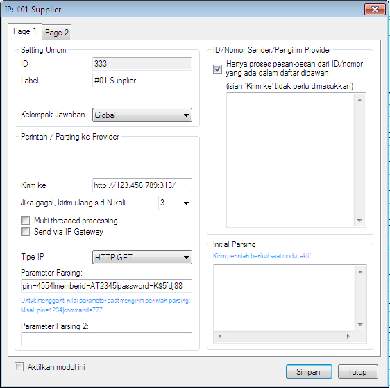
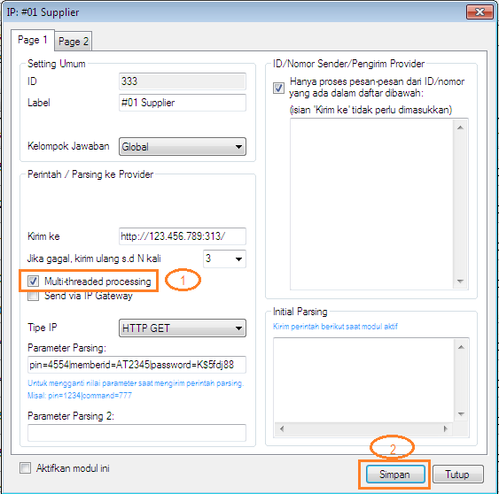

Multi-threaded Processing
Modul IP Client yang berguna untuk melakukan host to host ke server lain menggunakan IP berkolaborasi dengan IP Center atau IP Gateway di versi di bawah 3.7.4 hanya dapat memproses 1 transaksi, artinya modul tidak dapat memproses transaksi baru sampai transaksi awal statusnya sukses atau gagal. Hal ini tentu kurang praktis sebab akan mengakibatkan antrian transaksi dan memperlambat proses transaksi tentunya. Oleh karenanya, di versi 3.7.4 atau lebih tinggi di Modul IP Client ditambahkan fitur bernama "Multi-threaded processing" dimana fitur ini berguna agar Modul IP Client dapat memproses lebih dari 1 transaksi secara bersamaan, sehingga mempercepat pemprosesan transaksi.
Perlu dicatat, fitur ini hanya tersedia di Edisi Standard atau lebih tinggi klik disini, maka jika menginginkan fitur tersebut dan Edisi OtomaX Anda belum Edisi tersebut lakukan upgrade terlebih dahulu klik disini; dan jika Anda belum menggunakan versi 3.7.4 atau lebih tinggi lakukan update dahulu klik disini.
Untuk mengaktifkan fitur tersebut adalah sebagai berikut:
-
Pilih Modul IP Client -> klik kanan -> klik Setting. Akan muncul jendela seperti di bawah
ini:

-
Centang cekbox Multi-threaded processing -> klik tombol Simpan seperti gambar di bawah ini

- Selesai
Apa itu IP Client? klik disini, apa itu IP Center? klik disini, dan apa itu IP Gateway? klik disini.